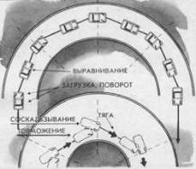

Ломаная траектория
Движение по дуге поворота на критической скорости практически в любой момент может привести к потере устойчивости и управляемости в результате неожиданного изменения коэффициента сцепления шин с дорогой (из-за наличия на дороге песка, отрицательного уклона, неровностей и т. д.). Не случайно многие опытные водители испытывают отрицательные эмоции на длинном крутом повороте.
Чтобы подстраховаться от неожиданного неуправляемого скольжения, можно изменить траекторию движения по дуге с постоянным радиусом на траекторию движения по периметру ломаного многогранника. Тогда можно повысить безопасность, применяя приемы, повышающие управляемость автомобиля.
Анализ техники ведущих автогонщиков позволяет констатировать, что метод дробления дуги на мелкие прямые и повороты заложен в основу скоростного движения в повороте.
Технологию движения в повороте в режиме скоростного барьера, т. е. на пределе собственных возможностей, можно представить себе как метод, пробы – ошибки – коррекции. Главная задача метода – “нащупать” на выбранной траектории грань срыва колес в скольжение.
Действия водителя-гонщика на дуге поворота представляют собой повторные циклы тонких движений: поворот колес и увеличение частоты вращения коленчатого вала двигателя до начала соскальзывания колес; выравнивание колес и уменьшение частоты вращения.
Все изменения происходят в узком диапазоне работы двигателя (примерно 6000–7000 об/мин). Для водителя обычного автомобиля этот диапазон снижен, но не меньше устойчивого показателя крутящего момента двигателя (примерно 3500–4000 об/мин для автомобилей семейства ВАЗ). Притом желательно избежать крайних вариантов дросселирования: полностью закрытого и полностью открытого “газа”, так как в первом случае возможно возникновение заноса задней оси, а во втором – сноса передних колес. Процесс управления при повороте на максимальной скорости напоминает “балансирование на острие ножа”, так как исключает резкие действия и в большей степени происходит “на опережении” нежели “на реакции”. Это достигается плавными нажатиями и резким отпусканием педали подачи топлива; то же происходит с рулением – плавный поворот и резкий возврат рулевого колеса.

Чтобы застраховаться от неожиданного сноса передних колес в длинном скоростном повороте, раздробите дугу на короткие отрезки и микроповороты. Вы получите возможность одну большую опасность разделить на серию мелких, каждую из которых легче преодолеть
Метод дробления дуги позволит многократно воспользоваться приемами самостраховки (передняя и боковая загрузки, плавное торможение, боковое соскальзывание) и уменьшить отрицательные эмоции, связанные с потерей устойчивости и управляемости автомобиля.
У читателя от этой информации может возникнуть ошибочное представление о работе педалью подачи топлива и рулевым колесом, т. е.: нужно “дергать” рулевое колесо влево, вправо и непрерывно нажимать и отпускать педаль подачи топлива. На самом деле это очень мягкий и осторожный процесс с минимальной амплитудой действий и четкой взаимосвязью между рулением и дросселированием в соответствии с дорожной информацией.
Ломаную траекторию при повороте можно рассматривать как активный метод самостраховки, особенно в тех случаях, когда трудно визуально оценить коэффициент сцепления или если водитель вследствие разных причин испытывает неуверенность в собственных силах. Тогда, увеличивая прямолинейные участки траектории до 5 – 10 м, он может использовать загрузку передних колес (см. прием 20) и гарантированно, без бокового скольжения, преодолевать серию поворотов небольшой крутизны, разрывая тем самым непрерывную дугу поворота на части (см. верхний рисунок). Этот способ успешно выполняется на переднеприводных автомобилях с такой особенностью: после загрузки и поворота колес необходимо тотчас нажать и отпустить тормозную педаль обязательно левой ногой при 1 “открытом газе”, притом эти действия выполняются без пауз между ними (см. нижний рисунок). Структура действий идентична “двойному входу” (см. прием 22), но включает большое число элементов, например 3–5 и более, в зависимости от длины поворота.